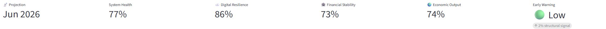
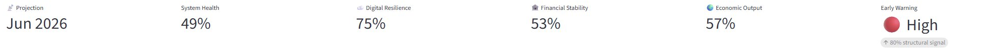
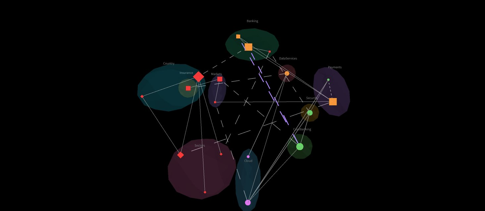

Seeing strain in a system before it shows symptoms. Belastung im System erkennen, bevor sie sichtbar wird.
ResonanceLens is a structural early-warning framework for complex networked systems — reading how disturbances propagate across topology, coupling and buffer capacity, oriented toward DORA operational resilience. ResonanceLens ist ein strukturelles Frühwarn-Framework für komplexe vernetzte Systeme — es liest, wie sich Störungen über Topologie, Kopplung und Pufferkapazität ausbreiten, ausgerichtet auf operative Resilienz nach DORA.
A lens on emergent system behaviour. Eine Linse auf emergentes Systemverhalten.
Most monitoring reacts when something already broke. ResonanceLens models a system as a network of nodes and coupled edges, then observes where structural stress accumulates — so erosion becomes visible while there is still room to act, not after the failure cascade. Übliches Monitoring reagiert, wenn bereits etwas ausgefallen ist. ResonanceLens modelliert ein System als Netzwerk aus Knoten und gekoppelten Kanten und beobachtet, wo sich struktureller Stress aufbaut — sodass Erosion sichtbar wird, solange noch Handlungsspielraum besteht, nicht erst nach der Ausfallkaskade.
What the structural view makes visibleWas die strukturelle Sicht sichtbar macht
Three things the model surfaces that classic monitoring tends to miss.Drei Dinge, die das Modell sichtbar macht, die klassisches Monitoring meist übersieht.


Warning before the breakWarnung vor dem Bruch
The same system on two structural paths. The early-warning signal diverges while system health still looks intact — structural weakening becomes visible before the drop.Dasselbe System auf zwei strukturellen Pfaden. Das Frühwarnsignal divergiert, während die System Health noch intakt wirkt — die strukturelle Schwächung wird vor dem Abfall sichtbar.

Risk that crosses domainsRisiko, das Domänen überspringt
Digital, financial and economic spaces as stacked layers. The vertical bridges between them — where a local disturbance turns systemic, cascading from calm (green) to critical (red) — are made explicit, not hidden.Digitale, finanzielle und wirtschaftliche Räume als gestapelte Ebenen. Die vertikalen Brücken dazwischen — wo eine lokale Störung systemisch wird, kaskadierend von ruhig (grün) zu kritisch (rot) — werden explizit gemacht, nicht verborgen.

Third-party concentration as structureDrittparteien-Konzentration als Struktur
The DORA ICT third-party scenario as clustered topology — provider groups and their coupling shown as structure, not a flat list. Where many functions depend on the same few providers becomes visible at a glance.Das DORA-IKT-Drittparteien-Szenario als geclusterte Topologie — Anbietergruppen und ihre Kopplung als Struktur dargestellt, nicht als bloße Liste. Wo viele Funktionen an denselben wenigen Anbietern hängen, wird auf einen Blick sichtbar.
A structural layer across the DORA pillarsEine strukturelle Schicht über die DORA-Säulen
ResonanceLens is a structural analysis and early-warning layer — not a compliance tool. Across four of the five DORA pillars it either supplies structure or consumes data; on third-party concentration risk it acts as the core engine. The value has one root throughout: structural knowledge of the coupled system, applied to different DORA requirements.ResonanceLens ist eine strukturelle Analyse- und Frühwarnschicht — kein Compliance-Tool. Über vier der fünf DORA-Säulen liefert es entweder Struktur oder konsumiert Daten; beim Drittparteien-Konzentrationsrisiko wirkt es als Kern-Engine. Der Mehrwert hat überall dieselbe Wurzel: strukturelle Kenntnis des gekoppelten Systems, angewendet auf unterschiedliche DORA-Anforderungen.
Eight interactive scenarios. Acht interaktive Szenarien.
Each runs the same structural engine on a different networked system. Explore them live in the demo. Jedes nutzt dieselbe strukturelle Engine an einem anderen vernetzten System. In der Demo live erkundbar.
Basic / PlaybackBasis / Playback
A guided walk-through of the core mechanics, step by step.Eine geführte Einführung in die Kernmechanik, Schritt für Schritt.
Energy Crisis 2020–2030Energiekrise 2020–2030
52 events over 126 months across coupled supply channels.52 Ereignisse über 126 Monate über gekoppelte Versorgungskanäle.
Pandemic 2020–2030Pandemie 2020–2030
Health capacity and economic output under sustained pressure.Gesundheitskapazität und Wirtschaftsleistung unter Dauerdruck.
Eurozone Financial StabilityEurozone-Finanzstabilität
Stress propagation across financial nodes, 2020–2030.Stressausbreitung über Finanzknoten, 2020–2030.
Cloud & Cyber ResilienceCloud- & Cyber-Resilienz
Concentration risk and failure paths in cloud dependencies.Konzentrationsrisiko und Ausfallpfade in Cloud-Abhängigkeiten.
Critical InfrastructureKritische Infrastruktur
Interdependent sectors with substitution and bridging edges.Interdependente Sektoren mit Substitutions- und Brückenkanten.
Banking Build-PipelineBanking-Build-Pipeline
DACH Tier-1 delivery pipeline, framed for DORA themes.DACH-Tier-1-Delivery-Pipeline, ausgerichtet auf DORA-Themen.
DORA ICT Third-Party (CTPP)DORA IKT-Drittparteien (CTPP)
Concentration among critical third-party providers.Konzentration unter kritischen Drittdienstleistern.
Read, explore, inspect. Lesen, erkunden, prüfen.
Interactive showcaseInteraktives Showcase
Run the scenarios yourself in the Streamlit app.Führe die Szenarien selbst in der Streamlit-App aus.
Showcase docsShowcase-Doku
How the scenarios are built and what the signals mean.Wie die Szenarien aufgebaut sind und was die Signale bedeuten.
The Resonance modelDas Resonanz-Modell
A public, conceptual overview of the approach.Ein öffentlicher, konzeptioneller Überblick über den Ansatz.
GitHub repositoryGitHub-Repository
The public showcase codebase.Die öffentliche Showcase-Codebasis.
Built as a reference and a showcase.Als Referenz und Showcase gebaut.
ResonanceLens is developed by Hüsnü Turkaç as both a technical reference implementation and a portfolio piece for Cloud / Platform and Solution Architect work in banking and insurance. ResonanceLens wird von Hüsnü Turkaç entwickelt — als technische Referenzimplementierung und zugleich als Portfolio-Arbeit für Cloud-/Platform- und Solution-Architect-Tätigkeiten in Banking und Insurance.
The public showcase demonstrates emergent system behaviour only. The underlying model mechanics remain proprietary. Das öffentliche Showcase zeigt ausschließlich emergentes Systemverhalten. Die zugrunde liegende Modellmechanik bleibt proprietär.